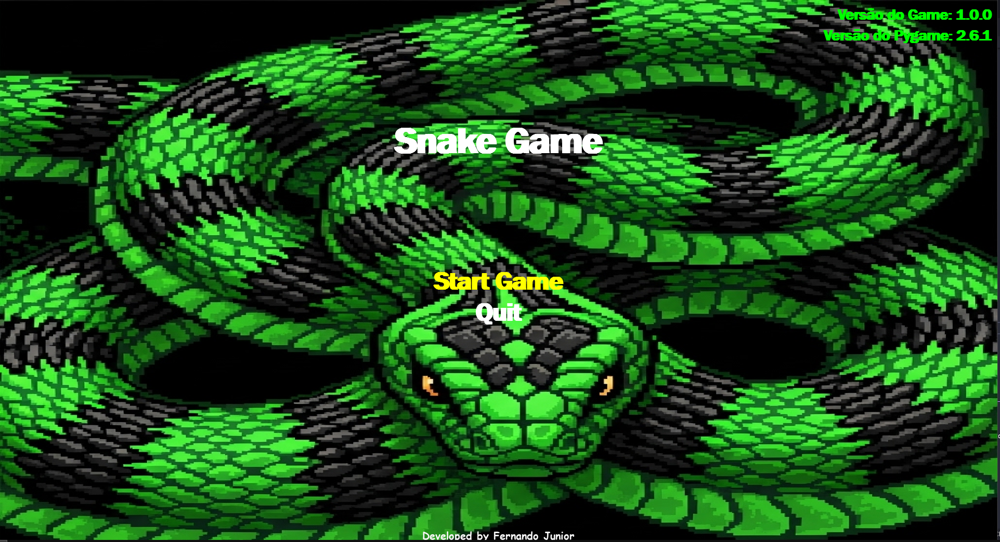

Visão Estratégica
Transformo problemas complexos em caminhos claros.
DESENVOLVEDOR DE SISTEMAS, APLICATIVOS E EXPERIÊNCIAS DIGITAIS
Minha trajetória na tecnologia começou com a construção de sites e interfaces digitais. Com o tempo, a curiosidade por sistemas mais complexos me levou ao desenvolvimento de aplicativos. A partir deles, passei a explorar experiências interativas e a construção de games.
Cada etapa ampliou minha forma de pensar: dos sites aos aplicativos, dos aplicativos aos sistemas e dos sistemas aos games. Hoje, reúno essa experiência para transformar ideias em produtos e experiências digitais.
O QUE CONSTRUO
Transformo problemas complexos em caminhos claros.
Encontro novas possibilidades onde outros enxergam limites.
Investigo, compreendo e construo soluções eficazes.
Uso diferentes ferramentas para transformar ideias em realidade.
Evoluo constantemente para construir cada vez melhor.

Um game inspirado no clássico jogo da cobrinha, desenvolvido internamente em Python.

Plataforma de rifas online com integração de pagamentos e sistema de gestão completo.
Um game de perguntas e respostas focado em desafio, raciocínio e diversão interativa.
O MEU OLHAR
Acredito que toda ideia carrega um potencial que nem sempre é evidente à primeira vista.
Não aceito automaticamente que a primeira solução seja a melhor.
Enxergo como ideias, tecnologias e sistemas podem se relacionar.
Converto possibilidades em experiências e produtos reais relevantes.
PROCESSO
Compreender o problema, a ideia e o objetivo.
Organizar possibilidades e definir o melhor caminho.
Transformar a estratégia em uma solução funcional.
Analisar, aprimorar e expandir o que foi construído.